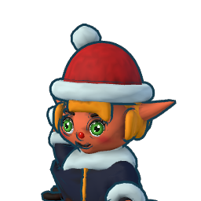
Snowball Rookie
Your trusty snowball thrower.
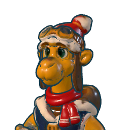
Camel ClausAn independent student studio Play nowMade for Camel Code Jam: Holiday Edition
Save the slopes.
Save the winter games.
Snowballs are crashing the college winter games. Rally a crew of festive defenders, line the ski course, and stop the avalanche before it reaches the finish.
Free on itch.io · Desktop browser · Mouse + keyboard
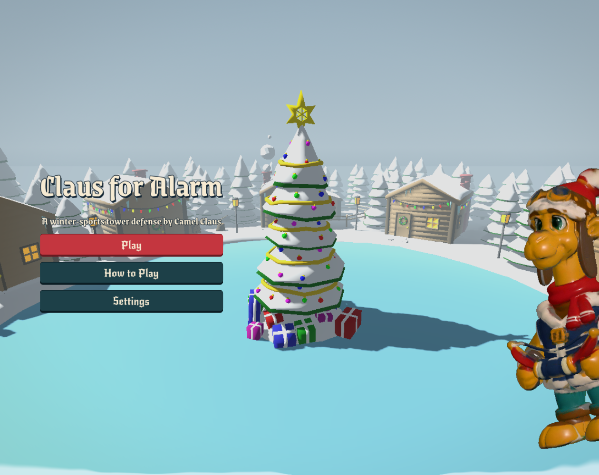
The game
A winding ski course becomes your defense line. Build a team, break through colored snowball layers, and make every upgrade count.
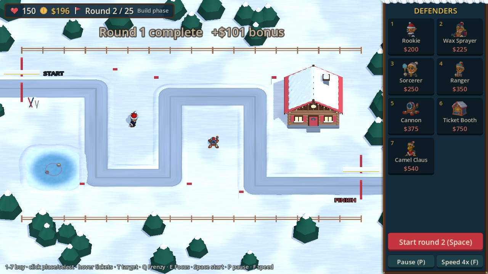
Your quick field guide
Pick a defender with 1–7 or a shop card. Click open snow beside the track to place it.
Press Space to start a round. Earn cash from pops, upgrade your defenders, and hover over lift tickets to collect income.
Survive all 25 rounds. Escaping snowballs cost lives; run out and the winter games are over.
Six defenders. One very festive hero.

Your trusty snowball thrower.
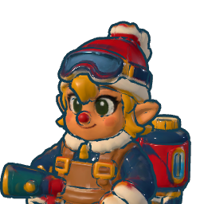
Slow the rush with sticky wax.
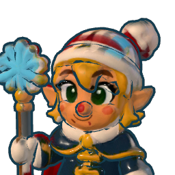
A little winter magic.
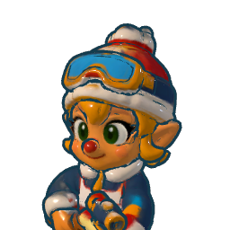
Precision from across the course.
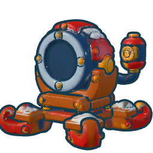
Big bursts for packed crowds.
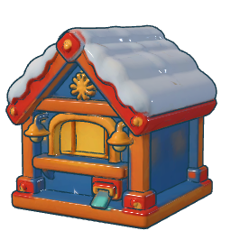
Lift tickets fund the defense.
The hero with home-campus spirit.
The jam’s two themes
Snow-covered lodges, a decorated village, festive elves, and a camel hero inspired by Connecticut College's mascot.
A ski circuit becomes the battlefield. Biathletes, wax sprayers, avalanche gear, and lift tickets turn a winter resort into a strategy game.
From the browser build
Real captures from the browser build. Select an image to take a closer look.
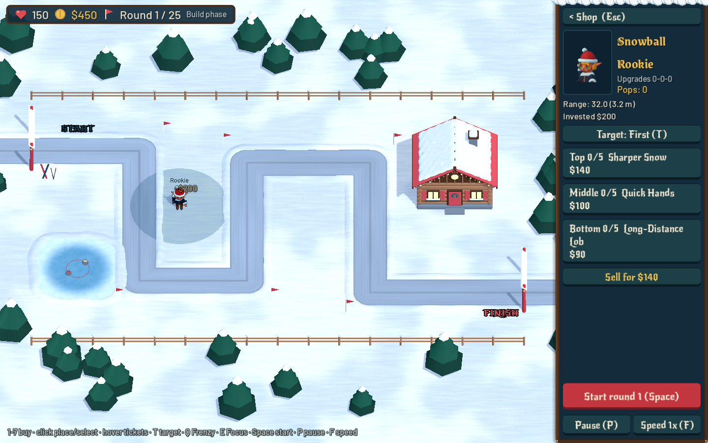
The making of
The work was in choosing the style, defining the rules, reviewing results, and bringing the pieces together. Here's the process behind the snow.
As a solo creator, I used AI across the project: reference art, 3D asset creation, rigging and animation workflows, and implementation. I also designed the gameplay systems—balance, upgrade synergies, enemy types, round difficulty, and economy—and brought the visuals, sound, and interaction together.
Explore the planning documents ↓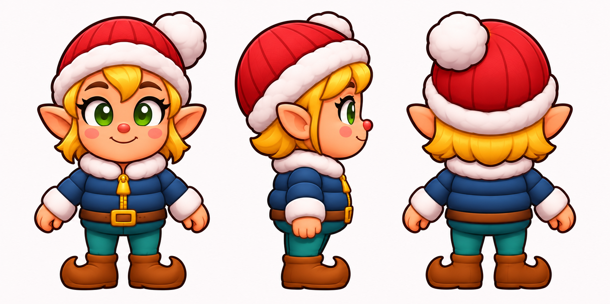
I started with GPT-generated contact sheets to nail down the shapes, colors, outfits, and expressions before generating 3D models. Front, side, and back views made the intended character specific.
The art direction stayed consistent: chunky toy proportions, a navy-and-red winter palette, friendly faces, and recognizable equipment.
I used Tripo AI to turn the selected references into 3D source models. Preparing them for the game meant reviewing scale, orientation, materials, and how each silhouette reads on the course.
I used AccuRig to rig the Rookie source model and worked on the animation pipeline. For the jam, the game keeps its existing runtime Rookie; the newer AccuRig replacement is saved for later. Other defenders use simple shared activity animations.
Blender + Godot brought prepared assets into the playable scene, alongside effects, UI, music, and sound. Browser checks helped review the results at actual gameplay scale.
Asset sourcing included Sketchfab and royalty-free libraries such as Pixabay. The credits below identify the environment and audio shipped in this build.
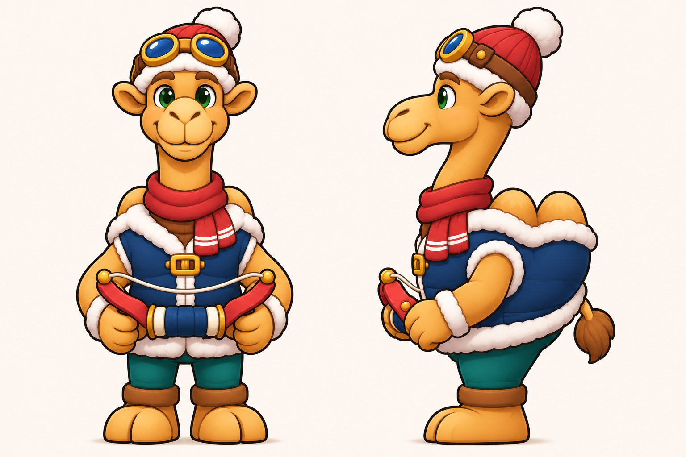
From reference to the roster
The hero's reference sheet beside the portrait rendered from the model used in the game.
The development blueprint
I made a master Markdown plan that broke development into phases and small tasks. It referenced three detailed documents: one for gameplay and balance, one for art, UI, and audio, and one for 3D production.
I used Opus 5.5 at various effort levels to implement the game from those specifications. Each task pointed to relevant design sections and required evidence before it could count as complete: tests, screenshots, or a browser run.
These are original planning snapshots, not a list of shipped features. Some planned towers, upgrades, and animation work were deferred for the jam.
Inside the prompt notebook
Three excerpts from my saved art prompts. The full prompts include the shared character and palette instructions.
“All views same height, feet baseline and top of hat aligned, matching body dimensions and outfit details. No perspective, no elevated camera, no foreshortening.”
From the Rookie body prompt: make multiple views describe the same character.
“Preserve the exact selected top-row character and its body proportions: large round head around 40 percent of total height”
From the shared Rookie instructions: carry a deliberate design choice into subsequent sheets.
“This is a NEW tower in that SAME visual universe, not a redraw of the Rookie or Cannon.”
From the tower prompts: create distinct units with a coherent art style.
The creator & the credits
Camel Claus is my solo student studio for Connecticut College's Camel Code Jam: Holiday Edition, November 13–15, 2026.
Solo creator
Game design, creative direction, and AI-assisted development.
Gameplay, balance, upgrade synergies, enemy types, round progression, economy, 3D asset creation, rigging, animation, and audio integration.
Read the making-ofMain-menu environment: Christmas Low-poly Scene by lumoize, licensed under CC BY 4.0. Adapted through rescaling, geometry batching, material adjustments, and baked object animation; the orbit camera, lighting, sky, and fog were added for the game. Original material animation is represented by steady emissive lights.
Shipped audio: Willosuna, used under the packs' royalty-free license. Packs include Christmas SFX, Cozy UI, Combat, Magic Spells, Game & UI, Card Game, Pixel Weather, Fantasy Ambience, and Christmas Music (free editions).
GPT for reference sheets; Tripo AI for 3D source-model generation; AccuRig for Rookie source-rig preparation; Opus 5.5 at various effort levels for development; Blender for asset preparation; Godot Engine for the game.
Website fonts: New Rocker by Pablo Impallari, Brenda Gallo, and Rodrigo Fuenzalida; Barlow by the Barlow Project Authors. Both under the SIL Open Font License: New Rocker license · Barlow license.
The slopes are calling
Free to play in your desktop browser.